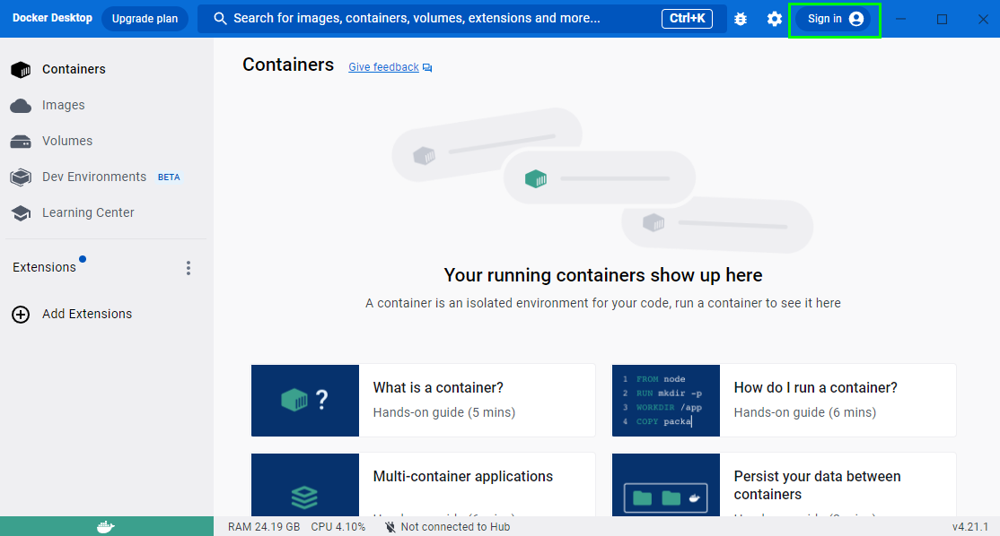
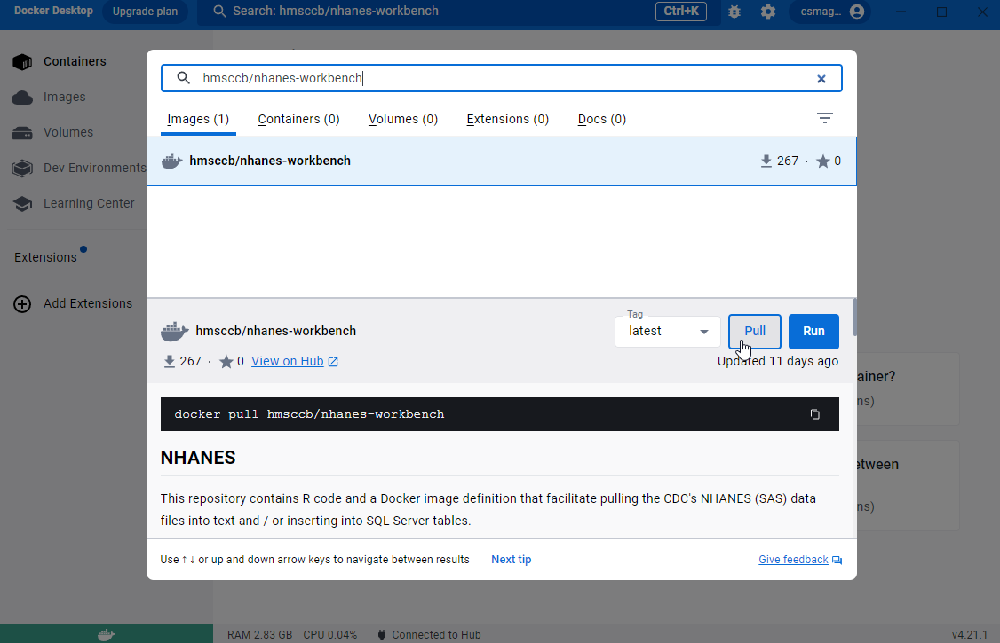
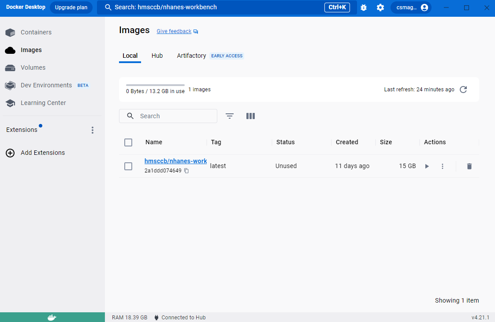
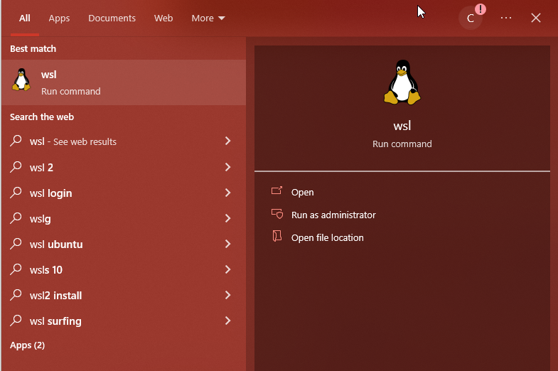
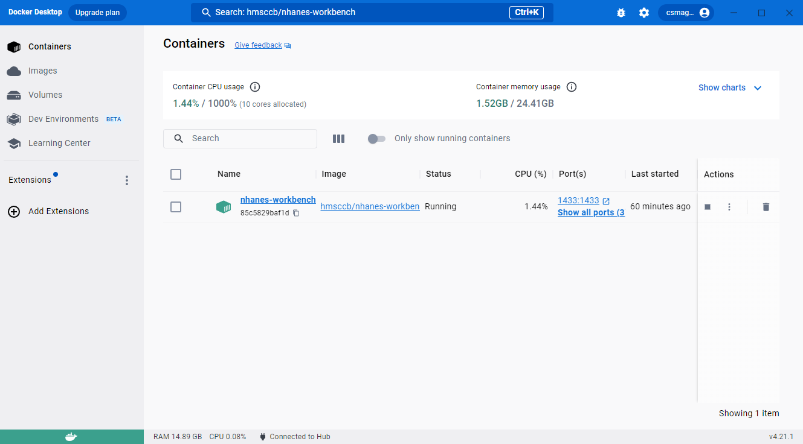
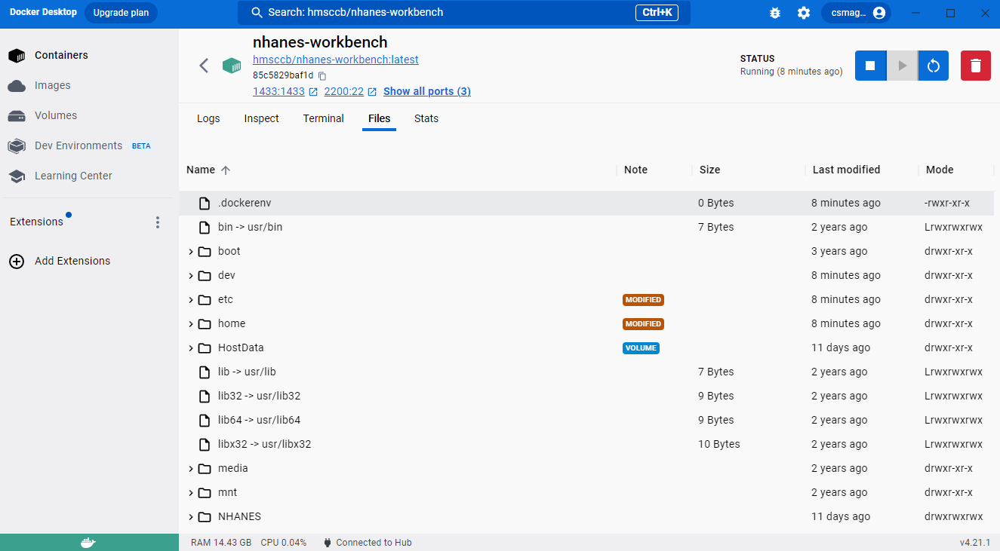
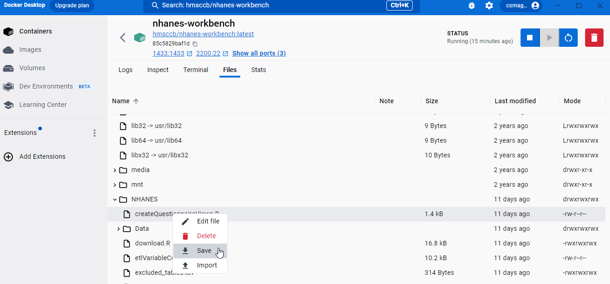
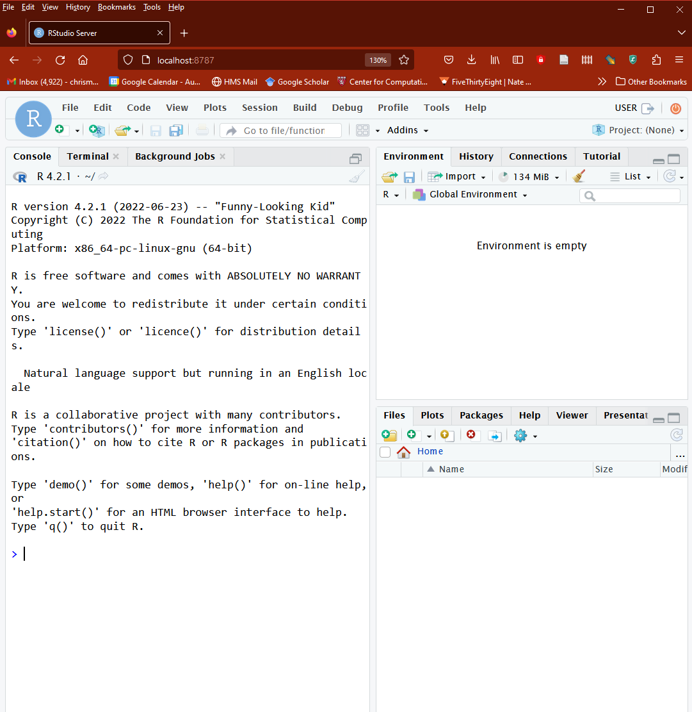
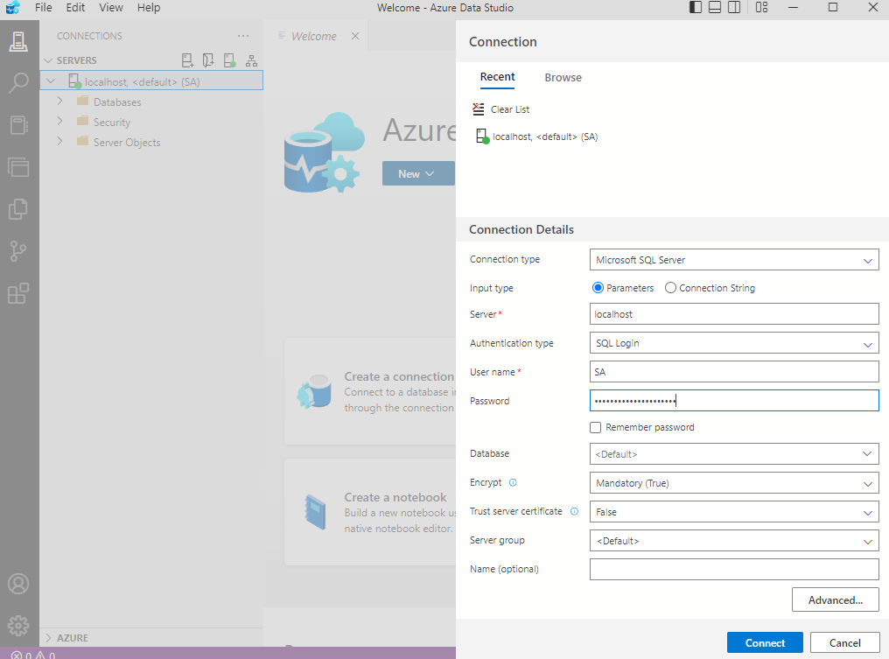

Downloading and Running NHANES Docker Container
Downloading the container
Option 1: Using Docker Desktop
- Make a free DockerHub account at this link.
- Login to your DockerHub account in Docker Desktop:
 3. Search for hmsccb/nhanes-workbench in the search bar, to the left of where you previously clicked Sign In in the top blue bar. You should get one image as the result.

- Make sure the
Tagdropdown is set toversion-0.0.4and clickPull.
Option 2: Using the command line
Open a terminal (if in Mac or Linux) or the command prompt (in Windows). Type the command
docker pull hmsccb/nhanes-workbench:version-0.0.4into the terminal.
You may need to specify a platform, you can try
docker pull --platform linux/arm64 hmsccb/nhanes-workbench:version-0.0.4or
docker pull --platform linux/x86_64/v8 hmsccb/nhanes-workbench:version-0.0.4if pulling without a platform is returning an error.
After you’ve downloaded the container, you should see it when you look at the Images tab in Docker Desktop.
 ## Setting up a volume
Running the container
Unfortunately, right now the container cannot be run from Docker Desktop due to Docker Desktop not allowing us to setup multiple ports. However, we can simply run the container from the command line.
On Mac or Linux, copy and paste the following command into a terminal:
docker \
run \
--rm \
--name nhanes-workbench \
-d \
-v LOCAL_DIRECTORY:/HostData \
-p 8787:8787 \
-p 2200:22 \
-p 1433:1433 \
-e 'CONTAINER_USER_USERNAME=USER' \
-e 'CONTAINER_USER_PASSWORD=PASSWORD' \
-e 'ACCEPT_EULA=Y' \
-e 'SA_PASSWORD=yourStrong(!)Password' \
hmsccb/nhanes-workbench:version-0.0.4Similar to pulling the container, if you get an error you may need to specify a platform by adding --platform linux/arm64 or --platform linux/x86_64/v8 to the run command.
If you’re using the WSL backend on Windows (recommended), you can open a linux terminal by hitting the windows key and typing in WSL:

Paste the run command above into your terminal to run the container.
If you’re using the Hyper-V backend on Windows, copy and paste this command into the command prompt (this is the same as the Mac/Linux command but doesn’t use the \ character to make it multiline):
docker run --rm --name nhanes-workbench -d -v LOCAL_DIRECTORY:/HostData -p 8787:8787 -p 2200:22 -p 1433:1433 -e 'CONTAINER_USER_USERNAME=USER' -e 'CONTAINER_USER_PASSWORD=PASSWORD' -e 'ACCEPT_EULA=Y' -e 'SA_PASSWORD=yourStrong(!)Password' hmsccb/nhanes-workbench:version-0.0.4You can learn more about what each part of this command does below.
Details
Parameters
LOCAL_DIRECTORY is a directory on the host that you would like mounted at /HostData in the container. Can be omitted.
CONTAINER_USER_USERNAME is the name of the user in the container that will be created at runtime. You can connect via ssh or RStudio Server with this user name.
CONTAINER_USER_PASSWORD is the password of the user in the container that will be created at runtime. You can connect via ssh or RStudio Server with this password.
ACCEPT_EULA is required for SQL Server to successfully start
SA_PASSWORD is the password for the SQL Server sa account. See here for complexity requirements.
Port Forwarding
These options control port forwarding from the container to the host:
-p 8787:8787 \
-p 2200:22 \
-p 1433:1433 \Port 8787 is used for access to the RStudio Server HTTP server. Port 2200 on the host provides access to ssh server in the container. Port 1433 provides access to SQL Server running in the container.
Confirming that the container is running
Inside Docker Desktop, in the Containers tab you should now see the nhanes-workbench container.

Inspecting the container
If you click on the nhanes-workbench entry, you can see and interact with the running container in a number of tabs.
Logs
This tab shows all of the output of the running container. If you are having problems with the container, the logs are the place to try to figure out what is going wrong.
Inspect
This tab gives you the general container information. You can check here to see where mounted files in the container live under Mounts or double check what you set your password to under Environment.
Terminal
This tab gives you a command-line interface into the container while it is running. Here you can manipulate files, run command-line tools, or anything else you’d need to do at the terminal inside the container.
Files
This tab lets you easily explore all of the files in the container.

You can select files or folders by right/command clicking on them, then select Save to save a copy of that file somewhere on your computer outside of the container.

Connecting to the container
Running RStudio
Once the Docker container is running, you can connect to it by pointing your web browser to port 8787. To do this, simply type http://localhost:8787 into your browser’s address bar. You’ll then need to login using USER and PASSWORD or whatever you set CONTAINER_USER_USERNAME and CONTAINER_USER_PASSWORD to when creating the container. You will then be in an RStudio instance inside the container.

Connecting to the SQL server directly
Database connectivity is enabled on TCP port 1433 on the host. Any standard tools that work with SQL Server (Azure Data Studio, SSMS, ODBC, JDBC) can be aimed at this port on the host to work with the DBs in the container.
If you are already familiar with relational databases, this can be a great option for accessing the NHANES data.
For instance, in Azure Data Studio you can connect to localhost using the username SA and password yourStrong(!)Password or whatever SA_PASSWORD was set to when you created the container. Note that you’ll have to set the authentication to SQL Login.

SSH
You can can ssh into the container, e.g.:
ssh USER@HOST_ADDRESS -p 2200 -o GlobalKnownHostsFile=/dev/null -o UserKnownHostsFile=/dev/nullIf you are running SSH on the same host where the container is running:
ssh USER@localhost -p 2200 -o GlobalKnownHostsFile=/dev/null -o UserKnownHostsFile=/dev/nullMore Details
You can find more details and some example scripts for running the SQL server on its Github page.